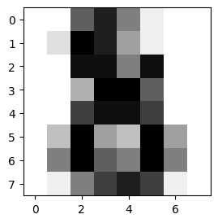

安装 scikit-learn#
命令：pip/pip3 install -U scikit-learn
digits数据集#
from sklearn.datasets import load_digits
import matplotlib.pyplot as plt
%matplotlib inline
# Load the digits dataset
digits = load_digits()
# Display the last digit
plt.figure(1, figsize=(3, 3))
plt.imshow(digits.images[-1], cmap=plt.cm.gray_r, interpolation="nearest")
plt.show()

from sklearn.datasets import load_digits
digits = load_digits() # 读取数据
digits_X = digits.data # 特征值
digits_y = digits.target # 标签值
digits_X.shape, digits_y.shape
((1797, 64), (1797,))
数据预处理#
首先，我们需要将目标值处理成独热编码的形式。
import numpy as np
digits_y = np.eye(10)[digits_y.reshape(-1)]
digits_y
array([[1., 0., 0., ..., 0., 0., 0.],
[0., 1., 0., ..., 0., 0., 0.],
[0., 0., 1., ..., 0., 0., 0.],
...,
[0., 0., 0., ..., 0., 1., 0.],
[0., 0., 0., ..., 0., 0., 1.],
[0., 0., 0., ..., 0., 1., 0.]])
from sklearn.model_selection import train_test_split
X_train, X_test, y_train, y_test = train_test_split(
digits_X, digits_y, test_size=0.2, random_state=1)
X_train.shape, X_test.shape, y_train.shape, y_test.shape
((1437, 64), (360, 64), (1437, 10), (360, 10))
定义模型类#
import tensorflow as tf
class Model(object):
def __init__(self):
# 随机初始化张量参数
self.W1 = tf.Variable(tf.random.normal([64, 30]))
self.b1 = tf.Variable(tf.random.normal([30]))
self.W2 = tf.Variable(tf.random.normal([30, 10]))
self.b2 = tf.Variable(tf.random.normal([10]))
def __call__(self, x):
x = tf.cast(x, tf.float32) # 转换输入数据类型
# 线性计算 + RELU 激活
fc1 = tf.nn.relu(tf.add(tf.matmul(x, self.W1), self.b1)) # 全连接层 1
fc2 = tf.add(tf.matmul(fc1, self.W2), self.b2) # 全连接层 2
return fc2
/Users/yilonghao/Library/Python/3.9/lib/python/site-packages/urllib3/__init__.py:34: NotOpenSSLWarning: urllib3 v2.0 only supports OpenSSL 1.1.1+, currently the 'ssl' module is compiled with 'LibreSSL 2.8.3'. See: https://github.com/urllib3/urllib3/issues/3020
warnings.warn(
定义损失函数#
完成前向传播模型构建后，下一个步骤是定义损失函数。这里，我们选择深度神经网络构建过程中十分常用的一个损失函数：交叉熵损失函数。交叉熵损失函数本质上就是我们前面学过的对数损失函数。交叉熵主要用于度量两个概率分布间的差异性信息。 $\( H_{y}^{'}(y) = = -\sum_{i} y_{i}^{'} log(y_{i}) \)$
TensorFlow 中给出了交叉熵损失函数 + Softmax 函数二合一 API：tf.nn.softmax_cross_entropy_with_logits 。下面我们就可以直接使用该函数，其中 logits 是模型输出，labels 为样本的真实值。该 API 会返回每个样本的损失计算结果，所以我们会使用 tf.reduce_mean 求得平均值，从而得到在训练集上的损失。
def loss_fn(model, x, y):
preds = model(x)
return tf.reduce_mean(tf.nn.softmax_cross_entropy_with_logits(logits=preds, labels=y))
模型训练#
有了损失函数，接下来就是定义优化器求得全局损失的最小值了。这里我们不再使用梯度下降，而是深度学习中更为常用的 Adam 优化器。Adam 实际上就是一种数学优化方法，Adam 的全称为 Adaptive Moment Estimation，它是一种自适应学习率的算法，其针对每一个参数都计算自适应的学习率。
EPOCHS = 200 # 迭代此时
LEARNING_RATE = 0.02 # 学习率
model = Model() # 实例化模型类
for epoch in range(EPOCHS):
with tf.GradientTape() as tape: # 追踪梯度
loss = loss_fn(model, X_train, y_train)
trainable_variables = [model.W1, model.b1, model.W2, model.b2] # 需优化参数列表
grads = tape.gradient(loss, trainable_variables) # 计算梯度
optimizer = tf.optimizers.Adam(learning_rate=LEARNING_RATE) # Adam 优化器
optimizer.apply_gradients(zip(grads, trainable_variables)) # 更新梯度
# 每 100 个 Epoch 输出各项指标
if epoch == 0:
print(f'Epoch [000/{EPOCHS}], Loss: [{loss:.4f}]')
elif (epoch + 1) % 100 == 0:
print(f'Epoch [{epoch+1}/{EPOCHS}], Loss: [{loss:.4f}]')
Epoch [000/200], Loss: [327.2664]
Epoch [100/200], Loss: [3.6507]
Epoch [200/200], Loss: [1.6345]
模型评估#
def accuracy_fn(logits, labels):
preds = tf.argmax(logits, axis=1) # 取值最大的索引，正好对应字符标签
labels = tf.argmax(labels, axis=1)
return tf.reduce_mean(tf.cast(tf.equal(preds, labels), tf.float32))
EPOCHS = 500 # 迭代此时
LEARNING_RATE = 0.02 # 学习率
model = Model() # 实例化模型类
for epoch in range(EPOCHS):
with tf.GradientTape() as tape: # 追踪梯度
loss = loss_fn(model, X_train, y_train)
trainable_variables = [model.W1, model.b1, model.W2, model.b2] # 需优化参数列表
grads = tape.gradient(loss, trainable_variables) # 计算梯度
optimizer = tf.optimizers.Adam(learning_rate=LEARNING_RATE) # Adam 优化器
optimizer.apply_gradients(zip(grads, trainable_variables)) # 更新梯度
accuracy = accuracy_fn(model(X_test), y_test) # 计算准确度
# 每 100 个 Epoch 输出各项指标
if epoch == 0:
print(f'Epoch [000/{EPOCHS}], Accuracy: [{accuracy:.2f}], Loss: [{loss:.4f}]')
elif (epoch + 1) % 100 == 0:
print(f'Epoch [{epoch+1}/{EPOCHS}], Accuracy: [{accuracy:.2f}], Loss: [{loss:.4f}]')
Epoch [000/500], Accuracy: [0.16], Loss: [302.3725]
Epoch [100/500], Accuracy: [0.81], Loss: [4.3210]
Epoch [200/500], Accuracy: [0.86], Loss: [1.8921]
Epoch [300/500], Accuracy: [0.84], Loss: [1.2837]
Epoch [400/500], Accuracy: [0.88], Loss: [0.8881]
Epoch [500/500], Accuracy: [0.89], Loss: [0.6326]